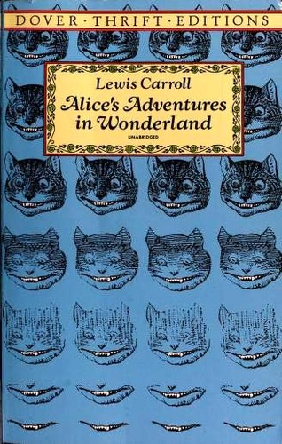
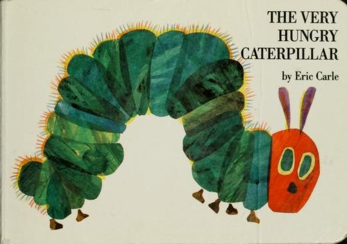
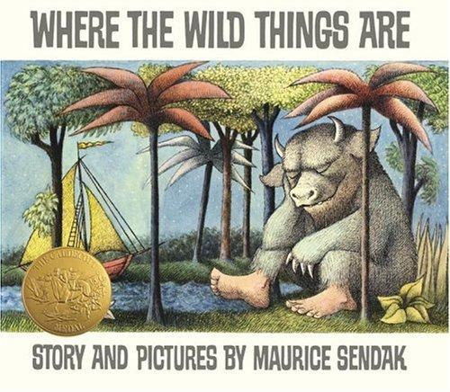
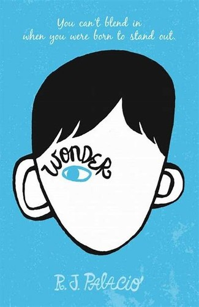

🌟 Word Play
EN
中文
Word Play
✏️ Spell It
📚 Books
Choose your age group
Age
👶
1 – 3
Pictures & Words
🧒
3 – 4
Drag to Match
👦
5 – 6
Word Quiz
Mode
🎮
Casual Play
Start & stop anytime
📝
Test Mode
20 or 50 words
▶ Start!
Choose your age group
👶
1 – 3
3–4 letter words
🧒
3 – 4
5 letter words
👦
5 – 6
6+ letter words
📚 Book Quiz
Fairy Tales

Alice in Wonderland
Chapters 1–5 · 20 Questions
Alice in Wonderland
Chapters 6–9 · 20 Questions
Alice in Wonderland
Chapters 10–12 · 20 Questions
Picture Books

The Very Hungry Caterpillar
20 Questions

Where the Wild Things Are
20 Questions
Children's Novels

Wonder
20 Questions
←
Back
🐕
⏳
Drag the correct word here 👆
🔊
←
Back
1 / 34
🐕
狗
🔊
Tap to hear the word
_ _ _
✓ Check
Next →
Next →
▶
Play Again
🏠
Home